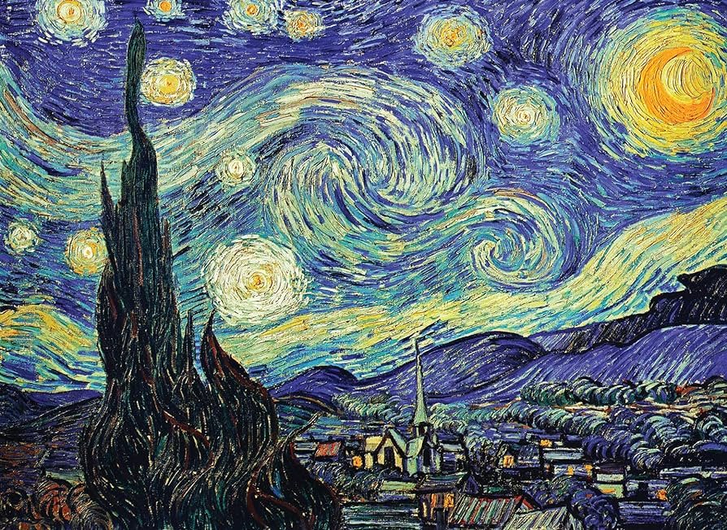
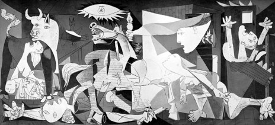

Starry Night by Vincent Van Gogh

Guernica by Pablo Picasso
 The Raft of the Medusa by Théodore Géricault, 1818–1819
The Raft of the Medusa by Théodore Géricault, 1818–1819
 The Night Watch by Rembrandt van Rijn
The Night Watch by Rembrandt van Rijn
 The Night Watch by Rembrandt van Rijn
The Night Watch by Rembrandt van Rijn
 Nighthawks by Edward Hopper, 1942
Nighthawks by Edward Hopper, 1942
 Sunflowers by Vincent Van Gogh
Sunflowers by Vincent Van Gogh
 Mona Lisa by Leonardo da Vinci
Mona Lisa by Leonardo da Vinci
 The Arnolfini Portrait by Jan van Eyck
The Arnolfini Portrait by Jan van Eyck
 The Tower of Babel by Pieter Bruegel the Elder, 1563
The Tower of Babel by Pieter Bruegel the Elder, 1563
 The Tower of Babel by Pieter Bruegel the Elder, 1563
The Tower of Babel by Pieter Bruegel the Elder, 1563
 The Astronomer
The Astronomer
 Girl with a Pearl Earring by Johannes Vermeer
Girl with a Pearl Earring by Johannes Vermeer
 A Sunday Afternoon on the Island of La Grande Jatte by Georges Seurat
A Sunday Afternoon on the Island of La Grande Jatte by Georges Seurat
 The Return of the Prodigal Son
The Return of the Prodigal Son
 Luncheon if the Boating Party by Pierre-Auguste Renoir
Luncheon if the Boating Party by Pierre-Auguste Renoir
 Last Supper by Leonardo Da Vinci
Last Supper by Leonardo Da Vinci
 American Gothic
American Gothic
 Arrangement in Grey and Black No. 1 (Whistler's Mother) by James McNeill Whistler
Arrangement in Grey and Black No. 1 (Whistler's Mother) by James McNeill Whistler
 Composition with Red Blue and Yellow by Piet Mondrian
Composition with Red Blue and Yellow by Piet Mondrian
 Impression, Sunrise by Claude Monet, 1874
Impression, Sunrise by Claude Monet, 1874
 The School of Athens by Raphael
The School of Athens by Raphael
 The Scream by Edvard Much, 1893
The Scream by Edvard Much, 1893
 Japanese Footbridge
Japanese Footbridge
 Great Wave off Kanagawa by Katsushika Hokusai
Great Wave off Kanagawa by Katsushika Hokusai
 Las Meninas (The Maids of Honor) by Diego Velázquez
Las Meninas (The Maids of Honor) by Diego Velázquez
 Wanderer above the Sea of Fog
Wanderer above the Sea of Fog
 The Swing by Jean-Honore Fragonard
The Swing by Jean-Honore Fragonard
 Head of a Skeleton with a Burning Cigarette
Head of a Skeleton with a Burning Cigarette
Starry Night by Vincent Van Gogh:
"Starry Night" is one of Vincent van Gogh's most renowned and iconic works of art. Painted in 1889 during his stay at the Saint-Paul-de-Mausole asylum in Saint-Rémy-de-Provence, France, this masterpiece showcases van Gogh's distinctive style and emotional depth.
Features:
- Style: Post-Impressionism
- Medium: Oil on canvas
- Dimensions: 73.7 cm × 92.1 cm (29 in × 36 1/4 in)
- Location: The Museum of Modern Art (MoMA) in New York City
Symbolism:
- Emotional Turmoil: Many art historians interpret "Starry Night" as a reflection of van Gogh's inner turmoil and emotional struggles. The swirling sky and tumultuous atmosphere are seen as manifestations of his mental state.
- Connection to Nature: Van Gogh had a profound connection to nature, and "Starry Night" is often viewed as a celebration of the beauty and majesty of the natural world.
- Spiritual Themes: Some scholars also see spiritual themes in the painting, with the starry sky symbolizing the infinite and the eternal, while the cypress tree represents the divine.
Mona Lisa by Leonardo da Vinci:
The Mona Lisa, painted by the Italian Renaissance master Leonardo da Vinci, is perhaps the most famous and enigmatic portrait in the world. Created between 1503 and 1506, this masterpiece has captivated viewers for centuries with its enigmatic smile and mysterious aura.
Features:
- Style: High Renaissance
- Medium: Oil on poplar panel
- Dimensions: 77 cm × 53 cm (30 in × 21 in)
- Location: The Louvre Museum in Paris, France
Symbolism:
- Beauty and Grace: The Mona Lisa is often seen as the embodiment of beauty and femininity, reflecting Renaissance ideals of aesthetics and perfection.
- Mystery and Intrigue: The painting's mysterious smile and enigmatic expression have sparked endless speculation and interpretation, inviting viewers to ponder the sitter's identity and the meaning behind her gaze.
- Universal Appeal: Despite the passage of centuries, the Mona Lisa continues to resonate with audiences around the world, transcending time and culture to become a universal symbol of art and beauty.
Girl with a Pearl Earring by Johannes Vermeer:
"Girl with a Pearl Earring" is a captivating masterpiece by the Dutch Golden Age painter Johannes Vermeer. Created around 1665, this iconic painting is celebrated for its exquisite depiction of a young woman adorned with a luminous pearl earring.
Key Features:
- Style: Dutch Golden Age, Baroque
- Medium: Oil on canvas
- Dimensions: 44.5 cm × 39 cm (17.5 in × 15.4 in)
- Location: Mauritshuis museum in The Hague, Netherlands
Symbolism:
- Beauty and Innocence: The girl's youthful beauty and serene expression symbolize innocence and purity, inviting viewers to contemplate the timeless allure of feminine grace.
- Mystery and Intrigue: The enigmatic gaze of the girl, coupled with the presence of the pearl earring, imbues the painting with an aura of mystery and fascination, prompting speculation about the sitter's identity and the story behind the artwork.
- Eternal Feminine: "Girl with a Pearl Earring" has been interpreted as a timeless representation of the feminine ideal, embodying qualities of elegance, grace, and refinement that transcend the boundaries of time and culture.
Arrangement in Grey and Black No. 1 (Whistler's Mother) by James McNeill Whistler:
"Arrangement in Grey and Black No. 1," commonly known as "Whistler's Mother," is a renowned portrait painted by the American artist James McNeill Whistler in 1871. This iconic painting, celebrated for its subtle composition and emotional depth, portrays the artist's mother, Anna McNeill Whistler, seated in a quiet domestic setting.
Features:
- Style: Tonalism
- Medium: Oil on canvas
- Dimensions: 144.3 cm × 162.4 cm (56.8 in × 63.9 in)
- Location: Musée d'Orsay in Paris, France
Symbolism:
- Maternal Love and Devotion: The painting is a poignant tribute to the artist's mother, celebrating the timeless bond between parent and child. Whistler's sensitive portrayal of his mother conveys a sense of warmth and affection, underscoring the universal themes of family and love.
- Domestic Serenity: The serene domestic setting of the painting evokes a sense of comfort and stability, inviting viewers to reflect on the quiet joys of home and hearth.
- Elegance and Grace: Whistler's mother is depicted with a sense of grace and elegance, embodying timeless qualities of poise and refinement.
Sunflowers by Vincent van Gogh:
Vincent van Gogh's "Sunflowers" series is one of the most iconic and celebrated works in the history of art. Van Gogh created multiple versions of sunflower still lifes between 1888 and 1889, each featuring vibrant colors, bold brushwork, and a deep emotional intensity. One of the most famous paintings in this series is simply titled "Sunflowers" (also known as "Sunflowers in a Vase"), painted in August 1888.
Key Features:
- Style: Post-Impressionism
- Medium: Oil on canvas
- Dimensions: Approximately 92.1 cm × 73 cm (36.3 in × 28.7 in)
- Location: Van Gogh Museum in Amsterdam, Netherlands
Legacy:
- Van Gogh's "Sunflowers" paintings are regarded as some of the most iconic and influential works in the history of Western art, cherished for their beauty, emotional depth, and profound symbolism.
- The "Sunflowers" series continues to captivate and inspire viewers around the world, serving as a testament to van Gogh's unique artistic vision and enduring legacy.
- "Sunflowers" is housed in the Van Gogh Museum in Amsterdam, where it remains a cherished and revered masterpiece, admired by millions of visitors each year for its timeless beauty and emotional power.
The Last Supper by Leonardo da Vinci:
"The Last Supper" is a monumental masterpiece by the Italian Renaissance genius Leonardo da Vinci, completed between 1495 and 1498. This iconic mural painting depicts the dramatic moment of Jesus Christ's final meal with his apostles before his crucifixion, as recounted in the New Testament.
Features:
- Style: High Renaissance
- Medium: Fresco
- Dimensions: Approximately 460 cm × 880 cm (180 in × 350 in)
- Location: Santa Maria delle Grazie church in Milan, Italy
Symbolism:
- Eucharistic Symbolism: The Last Supper is a significant event in Christian theology, commemorating Jesus' institution of the Eucharist, or Holy Communion, during which bread and wine are consecrated and shared among the disciples as symbols of his body and blood.
- Foreshadowing of Betrayal and Redemption: The painting captures the tension and foreboding that precede Jesus' betrayal and crucifixion, foreshadowing the events of his Passion and eventual resurrection.
- Spiritual Unity and Brotherhood: Despite the individual reactions of the apostles, the painting also conveys a sense of spiritual unity and fraternity among the disciples, emphasizing the bond of fellowship and devotion that unites them as followers of Christ.
The Arnolfini Portrait by Jan van Eyck:
"The Arnolfini Portrait" is a masterpiece of Northern Renaissance art created by the Flemish painter Jan van Eyck in 1434. This iconic painting is renowned for its meticulous detail, symbolic richness, and innovative use of perspective.
Features:
- Style: Northern Renaissance
- Medium: Oil on oak panel
- Dimensions: 82.2 cm × 60.0 cm (32.4 in × 23.6 in)
- Location: National Gallery in London, United Kingdom
Symbolism:
- Marital Union and Fertility: The painting is widely interpreted as a depiction of a marriage ceremony or contract, symbolizing the union of the couple and the continuation of their lineage. The presence of the bed and the gesture of the wife's hand resting on her abdomen suggest the hope for fertility and the continuation of the family line.
- Wealth and Prestige: The luxurious attire and opulent furnishings in the painting convey the wealth and social status of the Arnolfini couple, reflecting their prosperity and standing within society.
- Spiritual Themes: The painting also contains religious symbolism, with the figure of the Virgin Mary and the image of Christ in the convex mirror possibly alluding to the couple's piety and devotion.
The Japanese Footbridge by Claude Monet:
The Japanese Footbridge is a renowned painting by the French Impressionist artist Claude Monet. Completed between 1899 and 1900, this masterpiece is part of Monet's famous series of paintings focusing on his garden at his home in Giverny, France. The Japanese Footbridge is celebrated for its vibrant colors, delicate brushwork, and evocative depiction of the tranquil atmosphere of Monet's garden.
Key Features:
- Style: Impressionism
- Medium: Oil on canvas
- Dimensions: Approximately 81 cm × 101 cm (31.9 in × 39.8 in)
- Location: Metropolitan Museum of Art in New York City, United States
Symbolism:
- Nature and Tranquility: The Japanese Footbridge painting symbolizes Monet's deep connection to nature and his desire to capture the fleeting beauty of the natural world. The garden becomes a metaphor for tranquility and renewal, offering a sanctuary where one can escape the stresses of modern life and reconnect with the rhythms of the natural world.
- Inspiration and Creativity: Monet's garden at Giverny served as a constant source of inspiration for the artist, providing endless opportunities for artistic exploration and experimentation. The Japanese Footbridge painting reflects Monet's reverence for the beauty of his surroundings and his commitment to capturing the essence of the garden in his art.
Great Wave off Kanagawa by Katsushika Hokusai:
"The Great Wave off Kanagawa" is an iconic woodblock print created by the Japanese artist Katsushika Hokusai, part of his series "Thirty-Six Views of Mount Fuji." Completed around 1831, this print is one of the most famous works of Japanese art and a symbol of the country's artistic tradition.
Features:
- Style: Ukiyo-e (Japanese woodblock print)
- Medium: Woodblock print (ukiyo-e)
- Dimensions: Approximately 25.7 cm × 37.8 cm (10.1 in × 14.9 in)
- Location: Various museums and private collections worldwide
Symbolism:
- Power of Nature: The Great Wave off Kanagawa is often interpreted as a meditation on the awesome power and unpredictability of nature. The towering wave serves as a reminder of humanity's vulnerability in the face of natural forces beyond its control.
- Eternal Beauty: Mount Fuji, a symbol of Japan's natural beauty and cultural heritage, is depicted as a serene and immutable presence in the landscape, contrasting with the transitory nature of the waves and boats.
- Perseverance and Resilience: Despite the perilous situation depicted in the print, the fishermen in the boats appear undaunted, symbolizing the resilience and indomitable spirit of the human condition.
A Sunday Afternoon on the Island of La Grande Jatte by Georges Seurat:
"A Sunday Afternoon on the Island of La Grande Jatte" is a masterpiece of Pointillism created by the French artist Georges Seurat in 1884-1886. This monumental painting is celebrated for its meticulous technique, innovative approach to color, and captivating portrayal of leisurely bourgeois life in 19th-century Paris.
Features:
- Style: Pointillism, Neo-Impressionism
- Medium: Oil on canvas
- Dimensions: 207.6 cm × 308 cm (81.7 in × 121.3 in)
- Location: The Art Institute of Chicago in Chicago, Illinois, United States
Symbolism:
- Modern Life: "A Sunday Afternoon on the Island of La Grande Jatte" is often interpreted as a reflection of the changing social and cultural landscape of 19th-century Paris. The painting captures the burgeoning urban leisure culture of the time, as well as the leisurely pursuits and social rituals of the bourgeois class.
- Unity in Diversity: Despite the diversity of figures depicted in the painting, Seurat's meticulous technique and unified composition create a sense of cohesion and harmony. The island of La Grande Jatte becomes a microcosm of Parisian society, where people from all walks of life come together to relax and enjoy the pleasures of leisure.
- Timeless Themes: While rooted in the specific context of late 19th-century Paris, "A Sunday Afternoon on the Island of La Grande Jatte" explores timeless themes of leisure, community, and the human experience, making it resonate with viewers across generations.
Composition with Red Blue and Yellow by Piet Mondrian:
"Composition with Red Blue and Yellow" is a seminal work of abstract art created by the Dutch artist Piet Mondrian in 1930. This iconic painting exemplifies Mondrian's signature style of Neoplasticism, characterized by geometric abstraction, primary colors, and a grid-based composition.
Features:
- Style: Neoplasticism, Abstract art
- Medium: Oil on canvas
- Dimensions: Approximately 59 cm × 59 cm (23.2 in × 23.2 in)
- Location: Various museums and private collections worldwide
Symbolism:
- Universal Harmony: Mondrian's use of geometric abstraction and primary colors is rooted in his belief in the universal principles of harmony and order. "Composition with Red Blue and Yellow" is intended to evoke a sense of balance and equilibrium that transcends individual experience and culture.
- Spiritual Enlightenment: Mondrian's abstract paintings were deeply influenced by his interest in theosophy, a spiritual movement that sought to uncover the underlying unity of all existence. The grid-like structure of "Composition with Red Blue and Yellow" has been interpreted as a symbol of the cosmic order and the interconnectedness of all things.
- The Triumph of Form: Mondrian's Neoplastic paintings are a celebration of pure form and color, liberated from representational constraints. "Composition with Red Blue and Yellow" embodies Mondrian's vision of a new art form that expresses the essence of reality through abstraction.
Las Meninas (The Maids of Honor) by Diego Velázquez:
"Las Meninas," also known as "The Maids of Honor," is a masterpiece of Spanish Baroque art created by the renowned painter Diego Velázquez in 1656. This iconic painting is celebrated for its innovative composition, masterful use of light and shadow, and enigmatic portrayal of the Spanish royal family.
Features:
- Style: Baroque
- Medium: Oil on canvas
- Dimensions: Approximately 318 cm × 276 cm (125.2 in × 108.7 in)
- Location: Museo del Prado in Madrid, Spain
Symbolism:
- Royal Majesty: "Las Meninas" is a celebration of the Spanish royal family and their courtly splendor. The figures depicted, including the Infanta Margarita Teresa and her ladies-in-waiting, are dressed in sumptuous garments and adorned with symbols of wealth and prestige.
- Artistic Genius: Velázquez's inclusion of himself in the painting, standing behind an easel and painting the scene, is a testament to his own artistic skill and creative vision. The presence of the artist elevates the status of the painting and underscores its importance as a work of art.
- Metaphysical Depth: "Las Meninas" has been interpreted as a meditation on the nature of perception, reality, and representation. The complex interplay of gazes between the figures and the viewer creates a sense of ambiguity and uncertainty, prompting viewers to question their own role in the construction of meaning.
Guernica by Pablo Picasso, 1937:
"Guernica" is a powerful and iconic anti-war painting created by the Spanish artist Pablo Picasso in 1937. The artwork depicts the horrors of the bombing of the Basque town of Guernica during the Spanish Civil War and stands as a timeless symbol of the devastation and suffering wrought by conflict.
Features:
- Style: Cubism
- Medium: Oil on canvas
- Dimensions: Approximately 349 cm × 776 cm (137.4 in × 305.5 in)
- Location: Museo Reina Sofía in Madrid, Spain
Symbolism:
- Anti-War Statement: "Guernica" is a powerful indictment of war and violence, reflecting Picasso's outrage at the indiscriminate bombing of civilians during the Spanish Civil War. The painting serves as a timeless reminder of the human cost of conflict and the need for peace and reconciliation.
- Human Suffering: The figures in "Guernica" represent the universal experience of human suffering and grief. Picasso's use of distorted and fragmented forms underscores the psychological trauma inflicted by war, emphasizing the vulnerability and resilience of the human spirit.
- Hope for Peace: Despite its harrowing subject matter, "Guernica" also carries a message of hope and resilience. The defiant spirit of the figures depicted, particularly the woman holding a lamp, symbolizes the enduring human capacity for survival and resistance in the face of adversity.
Impression, Sunrise by Claude Monet, 1874:
"Impression, Sunrise" is a seminal work of Impressionist art created by the French artist Claude Monet in 1874. This painting is celebrated for its innovative technique, atmospheric effects, and evocative portrayal of light and color.
Features:
- Style: Impressionism
- Medium: Oil on canvas
- Dimensions: Approximately 48 cm × 63 cm (18.9 in × 24.8 in)
- Location: Musée Marmottan Monet in Paris, France
Symbolism:
- Subjective Experience: "Impression, Sunrise" reflects Monet's belief in the subjective experience of nature and the artist's role as an interpreter of light and color. The painting invites viewers to share in Monet's own sensory impressions of the scene, rather than presenting an objective representation of reality.
- Innovation in Art: "Impression, Sunrise" is often cited as a groundbreaking work that helped to establish the Impressionist movement. The painting's emphasis on spontaneity, atmosphere, and the effects of light paved the way for new approaches to painting that prioritized the artist's subjective experience over academic conventions.
- Connection to Nature: Monet's depiction of the sunrise over the harbor of Le Havre reflects his deep connection to nature and his fascination with capturing the transient beauty of the natural world. "Impression, Sunrise" serves as a reminder of the enduring power and inspiration of the natural world.
Wanderer above the Sea of Fog by Caspar David Friedrich, 1818:
"Wanderer above the Sea of Fog" is a seminal work of Romanticism created by the German artist Caspar David Friedrich in 1818. This iconic painting is celebrated for its sublime depiction of the natural world, as well as its exploration of themes such as introspection, existentialism, and the awe-inspiring power of nature.
Features:
- Style: Romanticism
- Medium: Oil on canvas
- Dimensions: Approximately 94.8 cm × 74.8 cm (37.3 in × 29.4 in)
- Location: Kunsthalle Hamburg in Hamburg, Germany
Symbolism:
- Individual vs. Nature: "Wanderer above the Sea of Fog" explores the relationship between the individual and the natural world, with the solitary figure serving as a symbol of human introspection and existential contemplation. The wanderer's elevated position suggests a sense of mastery and control over the landscape, yet also evokes feelings of vulnerability and humility in the face of nature's vastness.
- Sublime Experience: The painting embodies the Romantic ideal of the sublime, which is characterized by feelings of awe, wonder, and terror in the face of the natural world. The mist-shrouded landscape and imposing rock formations evoke a sense of mystery and transcendence, inviting viewers to experience the sublime alongside the wanderer.
- Journey of Self-Discovery: "Wanderer above the Sea of Fog" has been interpreted as a metaphor for the journey of self-discovery and spiritual enlightenment. The wanderer's solitary contemplation of the landscape symbolizes the search for meaning and purpose in life, as well as the quest for knowledge and understanding.
The Raft of the Medusa by Théodore Géricault, 1818–1819:
"The Raft of the Medusa" is a monumental masterpiece of French Romanticism created by the French artist Théodore Géricault between 1818 and 1819. This painting is a harrowing depiction of the aftermath of the wreck of the French naval frigate Méduse in 1816, capturing the desperation and anguish of the survivors stranded on a makeshift raft adrift at sea.
Features:
- Style: Romanticism
- Medium: Oil on canvas
- Dimensions: Approximately 491 cm × 716 cm (193.3 in × 282.3 in)
- Location: Musée du Louvre in Paris, France
Symbolism:
- Human Tragedy: "The Raft of the Medusa" serves as a powerful indictment of human folly and the consequences of hubris and incompetence. The painting exposes the failures of leadership and the callous disregard for human life that led to the disaster, while also celebrating the resilience and courage of the survivors.
- Social Commentary: Géricault's painting is also a searing critique of the social and political conditions of his time, reflecting broader themes of injustice, inequality, and the struggle for survival. The plight of the shipwrecked survivors serves as a metaphor for the precariousness of human existence and the harsh realities of life in a world marked by suffering and adversity.
- Heroism and Sacrifice: Despite the overwhelming despair depicted in the painting, "The Raft of the Medusa" also celebrates acts of heroism and selflessness in the face of adversity. The figures who band together to survive on the raft exemplify the human capacity for resilience and solidarity in the most dire circumstances.
Nighthawks by Edward Hopper, 1942:
"Nighthawks" is a quintessential work of American Realism painted by the renowned artist Edward Hopper in 1942. This iconic painting captures the solitude and isolation of urban life, depicting a scene of a late-night diner with three customers and a lone server.
Features:
- Style: American Realism
- Medium: Oil on canvas
- Dimensions: Approximately 84.1 cm × 152.4 cm (33.1 in × 60 in)
- Location: Art Institute of Chicago in Chicago, Illinois, United States
Symbolism:
- Urban Alienation: "Nighthawks" is often interpreted as a commentary on the alienating effects of modern urban life. The solitary figures in the diner appear disconnected from one another, lost in their own thoughts and experiences despite their physical proximity.
- Isolation and Loneliness: The empty streets and closed businesses surrounding the diner reinforce a sense of isolation and loneliness, suggesting that the figures in the painting are trapped in a state of existential solitude, even amidst the hustle and bustle of the city.
- Universal Themes: While "Nighthawks" depicts a specific moment in time and place, its themes of alienation, loneliness, and existential angst resonate on a broader, universal level, inviting viewers to reflect on their own experiences of modern life and the human condition.
The Night Watch by Rembrandt van Rijn, 1642:
"The Night Watch" is an iconic masterpiece of Dutch Golden Age painting created by the Dutch artist Rembrandt van Rijn in 1642. This monumental painting, also known as "Militia Company of District II under the Command of Captain Frans Banninck Cocq," is celebrated for its dynamic composition, dramatic lighting, and masterful portrayal of human emotion.
Features:
- Style: Baroque
- Medium: Oil on canvas
- Dimensions: Approximately 379.5 cm × 453.5 cm (149.4 in × 178.5 in)
- Location: Rijksmuseum in Amsterdam, Netherlands
Symbolism:
- Militia Company: "The Night Watch" depicts a group portrait of a militia company led by Captain Frans Banninck Cocq. The painting celebrates the civic pride and military prowess of Amsterdam's citizens during the Dutch Golden Age, while also serving as a testament to the importance of civic duty and community solidarity.
- Individuality and Unity: Despite the diversity of figures depicted in the painting, Rembrandt emphasizes their collective identity and shared purpose as members of a militia company. The individuality of each figure is subsumed within the larger group, symbolizing the strength and unity of the community.
- Historical Narrative: "The Night Watch" also serves as a historical document, capturing a specific moment in time and place during the Dutch Golden Age. The painting offers insights into the social, political, and cultural milieu of 17th-century Amsterdam, providing viewers with a window into the past.
Head of a Skeleton with a Burning Cigarette by Vincent van Gogh:
"Head of a Skeleton with a Burning Cigarette" is a lesser-known painting by Vincent van Gogh, completed in 1886 during his time in Paris. This small-scale work depicts the skeletal head of a figure with hollow eyes and a gaping mouth, holding a lit cigarette between its teeth. The painting's dark subject matter and somber tone contrast sharply with van Gogh's more famous vibrant landscapes and expressive portraits.
Key Features:
- Style: Post-Impressionism
- Medium: Oil on canvas
- Dimensions: Approximately 32 cm × 24.5 cm (12.6 in × 9.6 in)
- Location: Van Gogh Museum in Amsterdam, Netherlands
Symbolism:
- The skeleton and the burning cigarette can be interpreted as symbols of transience and mortality. The cigarette, a symbol of vice and addiction, serves as a reminder of the ephemeral nature of life and the inevitability of death.
The School of Athens by Raphael (Raffaello Sanzio), 1509–1511:
"The School of Athens" is a masterpiece of High Renaissance art created by the Italian artist Raphael (Raffaello Sanzio) between 1509 and 1511. This monumental fresco, located in the Vatican's Apostolic Palace, is celebrated for its harmonious composition, intellectual depth, and symbolic representation of classical philosophy.
Features:
- Style: High Renaissance
- Medium: Fresco
- Dimensions: Approximately 500 cm × 770 cm (200 in × 300 in)
- Location: Apostolic Palace, Vatican City
Symbolism:
- Celebration of Philosophy: "The School of Athens" is a celebration of the intellectual and philosophical achievements of classical antiquity. The gathering of philosophers represents a cross-section of ancient Greek and Roman thought, with each figure symbolizing a different aspect of human inquiry and knowledge.
- Dialogue between Plato and Aristotle: The central figures of Plato and Aristotle symbolize the two dominant philosophical traditions of the ancient world – Platonism and Aristotelianism. Their animated discussion reflects the ongoing dialogue and debate between these two philosophical schools, which continue to shape Western thought to this day.
- Unity in Diversity: Despite the diversity of figures depicted in the painting, "The School of Athens" conveys a sense of unity and harmony among the philosophers. The gathering serves as a metaphor for the shared pursuit of truth and wisdom that transcends individual differences and divisions.
The Astronomer by Johannes Vermeer:
"The Astronomer" is a masterpiece of Dutch Golden Age painting, created by the renowned Dutch artist Johannes Vermeer around 1668. It is one of Vermeer's most celebrated works, renowned for its meticulous attention to detail, exquisite rendering of light and shadow, and enigmatic portrayal of a scholar absorbed in his studies.
Key Features:
- Style: Baroque, Dutch Golden Age
- Medium: Oil on canvas
- Dimensions: Approximately 51 cm × 45 cm (20 in × 18 in)
- Location: Louvre Museum in Paris, France
Symbolism:
- The painting is rich in symbolic imagery that reflects the broader cultural and intellectual currents of the Dutch Golden Age. The astronomer's quest for scientific knowledge symbolizes the spirit of inquiry and exploration that characterized the era, while the tranquil atmosphere of the scene conveys a sense of order, harmony, and balance.
The Return of the Prodigal Son by Rembrandt van Rijn, 1661–1669:
"The Return of the Prodigal Son" is a poignant masterpiece of Baroque art created by the Dutch artist Rembrandt van Rijn between 1661 and 1669. This painting, based on the biblical parable found in the Gospel of Luke, depicts the emotional moment of reconciliation between a repentant prodigal son and his father.
Key Features:
- Style: Baroque
- Medium: Oil on canvas
- Dimensions: Approximately 262 cm × 205 cm (103 in × 81 in)
- Location: Hermitage Museum in Saint Petersburg, Russia
Symbolism:
- Divine Forgiveness: "The Return of the Prodigal Son" is often interpreted as a metaphor for divine forgiveness and redemption. The father's unconditional love and forgiveness towards his wayward son symbolize God's boundless mercy and compassion towards repentant sinners.
- Human Frailty and Redemption: The prodigal son's journey from sin and despair to repentance and reconciliation reflects the universal human experience of moral failure and spiritual renewal. Rembrandt's painting offers a message of hope and redemption, reminding viewers of the possibility of forgiveness and reconciliation in their own lives.
- Fatherly Love: At its core, "The Return of the Prodigal Son" is a celebration of paternal love and compassion. The father's willingness to forgive his son's transgressions and welcome him back into the family fold exemplifies the transformative power of love and reconciliation.
The Tower of Babel by Pieter Bruegel the Elder, 1563:
"The Tower of Babel" is a captivating masterpiece of Renaissance art created by the Flemish artist Pieter Bruegel the Elder in 1563. This painting, based on the biblical narrative from the Book of Genesis, portrays the ambitious construction of the Tower of Babel and its subsequent downfall.
Features:
- Style: Renaissance
- Medium: Oil on panel
- Dimensions: Approximately 114 cm × 155 cm (44.9 in × 61 in)
- Location: Kunsthistorisches Museum in Vienna, Austria
Symbolism:
- Hubris and Divine Punishment: "The Tower of Babel" is a cautionary tale about the dangers of human pride and ambition. According to the biblical narrative, God punished the builders of the tower by confounding their language and scattering them across the earth, leading to the creation of different languages and cultures.
- Unity and Division: The construction of the Tower of Babel represents a misguided attempt to achieve unity and cohesion through human effort alone. However, God's intervention results in division and discord, highlighting the limits of human achievement and the importance of humility before the divine.
- Cultural Commentary: Bruegel's painting also serves as a commentary on the social and political conditions of his time. The chaotic scene depicted in "The Tower of Babel" reflects the upheaval and uncertainty of the 16th century, marked by religious conflicts, social unrest, and geopolitical rivalries.
Blue Dancers by Edgar Degas, 1897:
"Blue Dancers" is a captivating masterpiece of Impressionist art created by the French artist Edgar Degas in 1897. This painting exemplifies Degas's fascination with the world of ballet and his innovative approach to capturing the fleeting movements and ethereal beauty of dancers in motion.
Features:
- Style: Impressionism
- Medium: Oil on canvas
- Dimensions: Approximately 72.4 cm × 66.1 cm (28.5 in × 26 in)
- Location: Musée d'Orsay in Paris, France
Symbolism:
- Celebration of Movement: "Blue Dancers" celebrates the beauty and expressiveness of movement, capturing the dynamic energy and grace of ballet dancers in motion. Degas's fluid brushwork and vibrant colors convey the sense of rhythm and harmony inherent in the dance.
- Exploration of Light and Color: The use of color and light in "Blue Dancers" serves to enhance the emotional impact of the painting, evoking a sense of joy, freedom, and vitality. The contrasting shades of blue symbolize the ethereal quality of the dancers' movements, while the interplay of light and shadow adds depth and drama to the composition.
- Ephemeral Beauty: "Blue Dancers" reflects Degas's fascination with capturing the ephemeral beauty of the ballet. The transient nature of the dancers' movements and the fleeting quality of light and color evoke a sense of impermanence and fleetingness, underscoring the fragile and evanescent nature of human experience.
American Gothic by Grant Wood:
"American Gothic" is a renowned painting by the American artist Grant Wood, completed in 1930. It is one of the most recognizable and iconic images in American art, depicting a farmer and his daughter standing in front of a Gothic-style farmhouse.
Key Features:
- Style: Regionalism
- Medium: Oil on beaverboard
- Dimensions: Approximately 74 cm × 62 cm (29 in × 24 in)
- Location: Art Institute of Chicago in Chicago, Illinois, United States
Symbolism:
- "American Gothic" is rich in symbolic imagery that reflects broader themes of American identity, rural life, and the values of the heartland. The Gothic-style farmhouse symbolizes tradition, stability, and a connection to the land, while the figures of the farmer and his daughter embody the hardworking, stoic spirit of rural America.
The Scream by Edvard Munch, 1893:
"The Scream" is an iconic and haunting masterpiece of Symbolist art created by the Norwegian artist Edvard Munch in 1893. This painting, one of the most famous images in the history of art, depicts a figure standing on a bridge, clutching its face in despair as it witnesses a blood-red sky and a distorted, nightmarish landscape.
Features:
- Style: Symbolism
- Medium: Oil, tempera, and pastel on cardboard
- Dimensions: Approximately 91 cm × 73.5 cm (36 in × 29 in)
- Location: National Gallery, Oslo, Norway
Symbolism:
- Existential Angst: "The Scream" is often interpreted as a powerful expression of existential angst and alienation. The figure's scream symbolizes the artist's own inner turmoil and despair, as well as the universal experience of confronting the abyss of existence.
- Nature's Response: The distorted landscape and blood-red sky in "The Scream" are often interpreted as a reflection of the artist's perception of the natural world as indifferent or hostile. The painting captures a moment of existential crisis, in which the figure is overwhelmed by the overwhelming beauty and terror of the natural world.
- Human Vulnerability: "The Scream" serves as a reminder of the fragility and vulnerability of the human condition. The figure's isolation and anguish resonate with viewers on a deep emotional level, evoking empathy and compassion for the universal struggles of the human experience.
Luncheon of the Boating Party by Pierre-Auguste Renoir, 1880-1881:
"Luncheon of the Boating Party" is a masterpiece of Impressionist art created by the French artist Pierre-Auguste Renoir between 1880 and 1881. This painting is celebrated for its vibrant colors, lively composition, and intimate portrayal of leisurely social interaction among friends on a sunny afternoon.
Features:
- Style: Impressionism
- Medium: Oil on canvas
- Dimensions: Approximately 129.9 cm × 172.7 cm (51.1 in × 68 in)
- Location: The Phillips Collection in Washington, D.C., United States
Symbolism:
- Celebration of Leisure: "Luncheon of the Boating Party" celebrates the pleasures of leisure and social interaction, depicting a group of friends enjoying each other's company in a relaxed and informal setting. The painting captures a moment of conviviality and camaraderie, highlighting the importance of human connection and companionship.
- Joie de Vivre: The painting embodies the spirit of joie de vivre, or the joy of living, that characterized the Impressionist movement. Renoir's lively brushwork and vibrant colors convey a sense of vitality and optimism, inviting viewers to share in the simple pleasures of everyday life.
- Embrace of Modernity: "Luncheon of the Boating Party" reflects Renoir's embrace of modernity and his fascination with contemporary life. The painting depicts a scene of leisure and recreation that was emblematic of the burgeoning middle class in late 19th-century France, capturing the zeitgeist of the era.
The Swing by Jean-Honoré Fragonard (1767):
The Swing, also known as The Happy Accidents of the Swing, is an iconic painting created by the French Rococo artist Jean-Honoré Fragonard in 1767. This masterpiece epitomizes the playful and lighthearted spirit of the Rococo era, depicting a whimsical scene of love, flirtation, and indulgence.
Features:
- Style: Rococo
- Medium: Oil on canvas
- Dimensions: Approximately 81 cm × 64 cm (32 in × 25 in)
- Location: Wallace Collection in London, United Kingdom
Symbolism:
- Amorous Pursuits: The Swing is often interpreted as a celebration of love and romance, with the swinging motion serving as a metaphor for the ups and downs of romantic relationships. The playful interaction between the figures suggests the joy and excitement of courtship and seduction.
- Social Satire: Beneath its seemingly idyllic surface, The Swing contains elements of social satire and critique. The presence of the older male figure, hidden in the shadows beneath the swing, alludes to the clandestine nature of affairs and the hypocrisy of the aristocratic elite.
- Escapism and Pleasure: The Swing embodies the Rococo ideals of pleasure, leisure, and escapism, offering viewers an enchanting glimpse into an idealized world of beauty, luxury, and indulgence.
View of Toledo by El Greco:
"View of Toledo" is a renowned landscape masterpiece created by the Spanish Baroque painter El Greco (Domenikos Theotokopoulos) around the year 1599. This painting is celebrated for its innovative composition, dramatic lighting, and emotive depiction of the ancient city of Toledo, Spain.
Features:
- Style: Mannerism
- Medium: Oil on canvas
- Dimensions: Approximately 121 cm × 108 cm (47.6 in × 42.5 in)
- Location: Metropolitan Museum of Art in New York City, United States
Symbolism:
- Spiritual Allegory: "View of Toledo" is often interpreted as a spiritual allegory, with the cityscape serving as a metaphor for the human soul's journey towards enlightenment and salvation. The tumultuous sky and rugged terrain symbolize the trials and tribulations of the earthly realm, while the distant horizon represents the promise of divine redemption and transcendence.
- Reflection of Inner Turmoil: El Greco's expressive handling of light and shadow in "View of Toledo" is thought to reflect the artist's own inner turmoil and spiritual quest. The stormy sky and brooding atmosphere evoke a sense of existential angst and longing, suggesting a profound engagement with questions of faith, mortality, and the mysteries of existence.